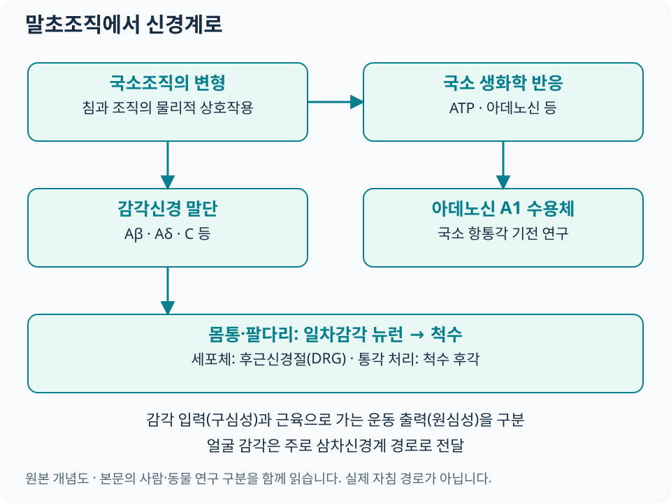

말초신경과 침 자극¶
침 자극의 첫 단계는 국소조직의 물리적 변화를 감각신경과 주변 세포가 받아들이는 과정입니다. 같은 피부 표면의 위치라도 관여하는 조직층과 자극 방식이 다르면 신경계에 들어가는 입력이 달라질 수 있습니다.
조직층과 기계적 신호변환¶
| 관찰할 층·구조 | 과학적으로 묻는 질문 | 해부학 자료 |
|---|---|---|
| 피부·피하조직 | 압박·신장·접촉이 어떤 감각 입력을 만드는가 | 조직층 개념도 |
| 근육·근막 | 조직 변형과 근육 감각 입력이 어떻게 연결되는가 | 부위별 MPS 아틀라스 |
| 말초신경과 주변 조직 | 감각분포·운동기능·포착 소견이 증상과 맞는가 | 임상해부학 |
| 혈관·건·관절 주변 | 인접 구조와 관찰한 조직층을 어떻게 구분하는가 | 초음파 조직 해부학 |
기계적 신호변환(mechanotransduction)은 조직의 변형이 세포의 전기적·생화학적 신호로 바뀌는 과정을 뜻합니다. 사람을 대상으로 한 Langevin 등의 실험에서는 침 회전에 따라 침을 빼는 데 필요한 힘이 달라지는 현상을 측정했습니다. 이는 침–조직 사이의 물리적 상호작용을 보여 주며, 임상 통증의 장기 개선을 평가한 시험과는 연구 질문이 다릅니다. 원저: J Appl Physiol, 2001.
근막의 연속성과 신경·세포의 반응을 연구할 수 있지만, 그것만으로 근막과 경락의 해부학적 일치를 확정하지는 않습니다. MPS에서는 익숙한 통증의 재현·연관통·기능 평가를 함께 기록합니다.
감각신경 섬유¶

{kind=link}
| 섬유 | 일반적인 특성 | 침 연구에서의 의미 |
|---|---|---|
| Aβ | 비교적 굵은 유수섬유, 주로 낮은 역치의 기계감각 | 촉각·압박 입력과 척수 내 조절을 연구 |
| Aδ | 가는 유수섬유, 일부 기계·온도·통각 입력 | 자극 특성에 따른 빠른 통각 및 감각 반응에 관여 |
| C | 무수섬유, 다양한 통각·온도·화학감각 기능 | 자극·조직 상태에 따른 느린 감각 입력과 국소 반응에 관여 |
이 분류는 감각의 경향을 설명합니다. ‘묵직함은 특정 섬유 하나’, ‘특정 전류는 누구에게나 같은 섬유’처럼 일대일로 대응시키기 어렵습니다. 2024년 구심성 신경 리뷰도 부위·조직층·자극 방식·강도를 함께 다룹니다. Fan 등, 2024.
몸통·팔다리의 일차감각 뉴런은 세포체가 후근신경절(DRG)에 있고, 중추로 향하는 가지가 척수로 들어갑니다. DRG를 시냅스가 일어나는 중계핵처럼 그리지 않도록 주의합니다. 척수 후각에서의 통각 처리는 척수·하행성 조절로 이어집니다. 얼굴의 감각은 주로 삼차신경계 경로를 이용하므로 몸통·팔다리의 척수 경로와 구분합니다. 후근신경절 해부학 · 삼차신경 해부학.
ATP·Adenosine¶
ATP는 세포 밖에서 신호물질로 작용할 수 있고, 분해 과정에서 생성되는 아데노신은 별도의 수용체를 통해 작용합니다. ATP 신호와 아데노신 A1 수용체 작용을 모두 같은 방향의 진통 작용으로 묶지 않고 각각의 수용체·실험 조건을 확인합니다.
| 연구 | 무엇을 했나 | 직접 관찰한 결과와 범위 |
|---|---|---|
| Goldman 등, 2010 — 동물 기전 연구 | 생쥐의 국소 아데노신과 A1 수용체를 조작·측정 | 국소 항통각 반응에서 A1 수용체의 기여를 제시. 사람의 최적 치료량은 별도 질문 |
| Takano 등, 2012 — 사람 생리 연구 | 족삼리 부위 침 자극 전·중·후 미세투석으로 조직액 측정 | 국소 아데노신 농도 증가를 관찰. 만성통증 환자의 장기 효과를 입증하는 RCT는 아님 |
출처: Goldman 원저, Takano 원저. 두 연구를 함께 읽으면 동물에서의 수용체 검증과 사람에서의 생리 관찰이 어떤 관계인지 이해할 수 있습니다.
TRPV·말초 수용체¶
TRPV1을 비롯한 TRP 계열 이온통로, 아데노신·오피오이드·칸나비노이드 수용체, 여러 신경매개물질이 말초 항통각 연구의 대상입니다. 같은 분자도 자극을 감지하는 단계와 염증·과민성이 바뀌는 단계에서 역할이 다를 수 있어, 증가·감소 자체보다 어느 세포에서 무엇을 측정했는지를 봅니다.
2021년 리뷰는 말초 수용체·매개물질에 관한 전임상 연구 29편을 검토했습니다. 해당 결과는 실험 모델의 설명에 활용하고, 특정 경혈의 임상 적응증이나 환자의 수용체 상태를 추정하는 검사로 사용하지 않습니다. Peripheral receptors and neuromediators review.
임상해부학 연결¶
기록은 위치 → 조직층 → 감각분포 → 운동기능 → 관련 신경근·말초신경 → 치료 후 변화 순서로 정리할 수 있습니다. 감각 입력은 구심성, 근육으로 가는 운동 출력은 원심성 경로입니다. 근육을 지배하는 운동신경 이름만으로 침의 모든 감각 경로를 설명하지 않습니다.
| 진찰에서 관찰한 것 | 다음에 확인할 내용 |
|---|---|
| 근육 압박에서 익숙한 통증이 재현됨 | MPS 평가, 움직임과 부하에 따른 변화 |
| 특정 감각분포의 저림·감각저하 | 신경포착, 근력·반사·신경근 분포 |
| 경혈 부위와 증상 부위가 떨어져 있음 | 분절·중추 통증조절, 해당 질환의 임상근거 |
| 조직층이나 인접 구조 확인이 필요함 | 근골격계 초음파와 안전 안내 |
침을 받는 동안의 묵직함·당김 등 감각은 설명하고 기록하되, 강한 전격통이나 지속되는 저림·새로운 근력저하는 즉시 의료인에게 알리고 신경 상태를 확인합니다. 신경계의 반응을 얻기 위해 신경줄기를 직접 찌르는 것을 목표로 삼지 않습니다.